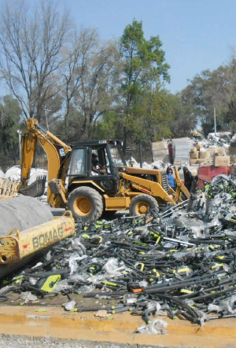
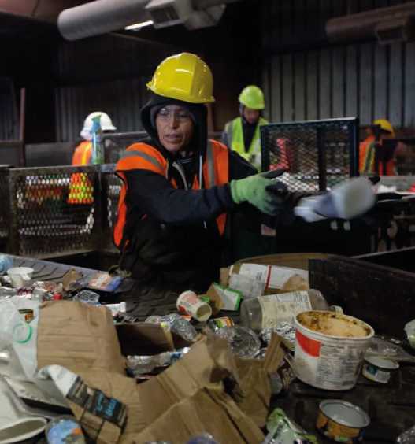

Administradores Ambientales
Nuestros Servicios 🌿

DESTRUCCIONES FISCALES E INDUSTRIALES 🏭
Consta de la destrucción total de las mercancías y/o productos terminados que ya no pueden salir al mercado por distintos casos.
- Caducidad
- Vencimiento de licencias
- Excedente de inventario
- Pérdida de valor
- Deterioro
- Incumplimiento de las normas de calidad
- Cuando se determina que no salgan al mercado, de conformidad con lo establecido en el Sistema de Administración Tributaria (SAT).

RECICLADO DE DESPERDICIO ♻️
Nuestro servicio de reciclado de desperdicios se enfoca en transformar los materiales que ya no necesitas en recursos valiosos. A través de procesos innovadores y responsables, garantizamos que tus residuos sean gestionados de manera eficiente, reduciendo la huella ambiental y promoviendo un futuro más verde. Juntos, podemos convertir el desperdicio en oportunidades, impulsando un ciclo de economía circular que beneficia a tu empresa y al planeta. Al elegir nuestro servicio, cumples con:
- Las regulaciones ambientales
- Conservación de los recursos naturales
- Economía circular verde
- Reduces tu huella ambiental
- Gestión eficiente de residuos

SERVICIO INTEGRAL DE RECOLECCIÓN DE RESIDUOS 🗑️
Consta en el retiro de los residuos mediante contenedores. Estos servicios se realizan por medio de contenedores, la recolección consiste en el retiro de sus residuos para su clasificación, antes de ser confinados. Clasificamos en los siguientes rubros:
- Recolección industrial: Refiere a los residuos de un 80% inorgánicos y reciclables
- Recolección Comercial / alimenticia: refiere a los establecimientos o industrias de producción de alimentos
- Recolección de Manejo Especial: son los residuos que generan las industrias como: llantas, lodos, grasas, lodos tratados, etc.
- Recolección de RP: Refiere a residuos peligrosos, contamos en el servicio de recolección, transporte, acopio y destino final.
Administradores Ambientales